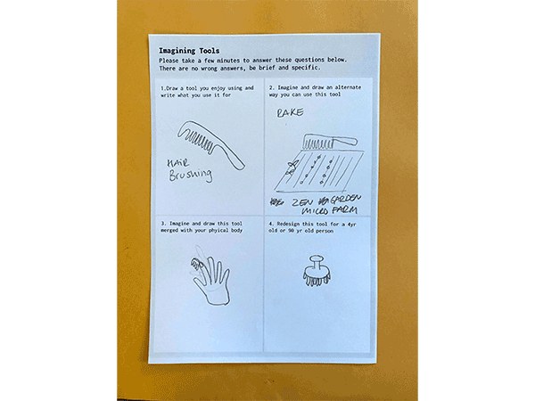
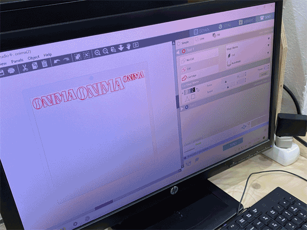
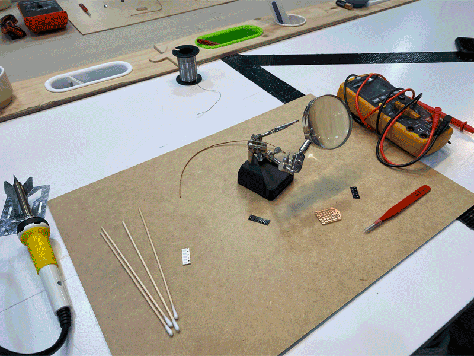

🛠 Fab Academy 🛠
🔐 Micro Challenges
One,
Two ,
Three
,
Three ,
Four
,
Four
Week 1: Principles & Practices
Learnings: Our first Fab Academy class was a recap of web and git basics, which we covered in the beginning of the first term while starting our own websites. We discussed the history of git and the reason behind the usage of it, mainly focused around version control, and were shown examples on best practices and ways to use git effectively for collaborations. We also briefly went over different coding languages to build websites including html and markdown. Finally, we discussed the structure of the fab academy course and what to expect on a weekly basis.Reflections: I changed my website from markdown language to html at the beginning of the course because I wanted more control of the design and layout. I had basic knowledge of html and wanted to be able to learn a bit more and create a website from scratch. Now I'm at a point where I am less focused on the design of my site and more on creating content in a timely manner - which has been challening with the many layers of assignments. But I'm trying to explore formats of documentations that will help me work more efficiently.
Assignment: Looking at the 2021 MDEF alumni's documentation methods, I was drawn to these three websites:
- Krzysztof Wronski - I enjoyed the simplicity and brevity of Krzystof's documentation style. I also found his writing candid and straight forward, making it easy to read through.
- Roger Guilemany - In Roger's website, I liked the general design of his website along with the layout. His writing and documentation style was also direct and easy to digest.
- Jana Tothillcalvo. - I appreciated the playful and graphic qualities of Jana's website. It was fun to navigate through and have a sense of discovery.
Week 2: Computer-Aided Design
Learnings:This week was n introduction into computer aided design. We started with the basics of pixels vs vector, colors, and file formats, which I already have a good understanding of with my background in graphic design. Then we moved into 3D design, and learned about different platforms and modes of 3D modeling including parametric design and freeform modeling. We dived deep into the origins and values of Blender as a community and software, and looked into the ways we can use blender for future projects. Following the basic navigation tools through Blender, I could see there was a lot to learn and many possibilities within this software. I just wish we had some more hours in the week to have time to learn and experiment with new software properly.Reflections: I look forward to learning some 3D modeling skills because it's one that I'm lacking. I have used SketchUp in the pasat to create exhibtions and layout graphics, but it wasn't at the level of accuracy or fabrication drawings for production. It would be a great to be able to create 3D models that can then be transtlated into printing or cutting machines, and physicalized in the real world.
Assignment: I wanted to create a 3D model of one of the drawings from my 'Imagining Tools' intervention during the Design Dialogues (term 1). This is an imaginary object that was inspired by a hairbrush. I created the model of a drawing the participant made for a 4yrold or 90yr old.


Week 3: Computer-Controlled Cutting
Learnings: We learned about the history of laser cutting starting from the 1950s with the microwave application to the machines that we are using today. We reviewed the two main processes in computer aided manufacturing: additive and subtractive. Additive processes start with nothing and add material, ie. 3D machine. Subtractive processes start with the material and reduce, ie. laser cutter, vinyl, CNC.Materials that could be used with laser cutter: wood, cardboard, fabrics, plastics. We looked at the anatomy of the laser cutter machine and the parts that are crucial for functioning. Design considerations: tolerance, kerf: accounting for material that is burnt, Three golden rules of laser cutter: focus the material, check power, frequency and speed, and turn on extraction.
Assignment: First, I made a quick test on the laser cutter with an AI logo I already had of my partner's hot sauce brand. The vinyl cutter was very straight forward and I was glad to have tried it. I would like to continue to use it for future projects.

Initially, I wanted to create a form that could be useful or related to my topics of interests at MDEF. Since I was completely green in working with 3D modeling softwares, I consulted a few of my classmates to decide on which software I should start with. After some thought, I decided to start with Rhino 3D and Grasshopper because it seemed most useful in the long run and compatible with various machines at Fab Lab BCN.
Although I wanted to make something relevant to my interests, I realized I was running behind in spending too much time conceptualizing what to make (also due to covid), and needed to just try creating and cutting something simple to understand the process first. Joaquin helped me start a basic Grasshopper shape: a triangle with divots in it, but we ran into an issue in finding the Grasshopper command that detects a line's midpoint. We struggled to find this function, and due to time limitations (my laser cutter appointment was coming up), we decided to try and figure it out later but in the meantime use Rhino to create the shape. I made a simple hexagon shape and a rectangle on one of the edges. I used the 'array' command to distribute the rectangle divots at the midpoints of each of the edges. Since we had already tested the kerf of the laser cutter and doing press-fit with the MDF, I knew the sidth of the rectangle had to be 2.4mm wide for a perfect fit.
At the laser cutter, I made a test of two shapes first and tried joining them. Then I realized that the lengths of the rectangle divots were too long, as when they were fit together, the length multiplied and went over the center of the piece. This created a problem because I wasn't able to fit multiple pieces in one. I had to quickly change the length of the rectangles, and I wished I had figured out the parametric design in Grasshopper. I manually modified the length from 25mm to 12mm in Rhino and made the pieces smaller as well, so to take up less space on the MDF board. I was happy with the way the pieces turned out. Although they were simple, because of their simplicity they provided many options for joining and creating different shapes.

Week 4: Electronics Production
Learnings:
Reflections:
Assignment:
Week 5: 3D Printing & Scanning
Learnings:Reflections:
Assignment:
3D Printing
Week 6: Electronics Design
Week 7: Computer-Controlled Machining
Week 8: Embeded Programming
Week 9: Mechanical / Machine Design
Week 10: Break
Week 11: Inputs Devices
Week 12: Molding & Casting
Week 13: Output Devices
Week 14: Networking & Communications
Week 15: Interface & Application Programming
Week 16: Wildcard Week
Week 17: Applications & Implications
Week 18: Invention, Intellectual Property & Income
Week 19: Project Development
Week 20: Project Presentation